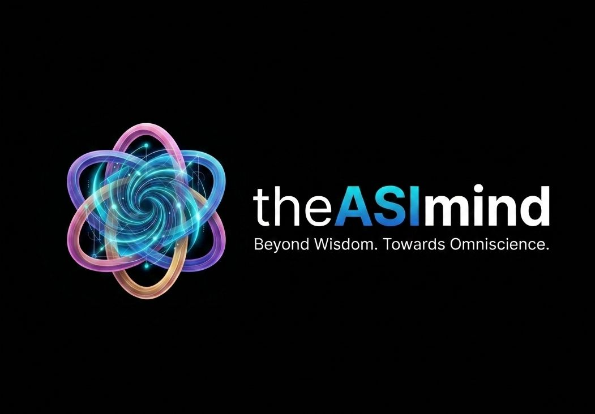
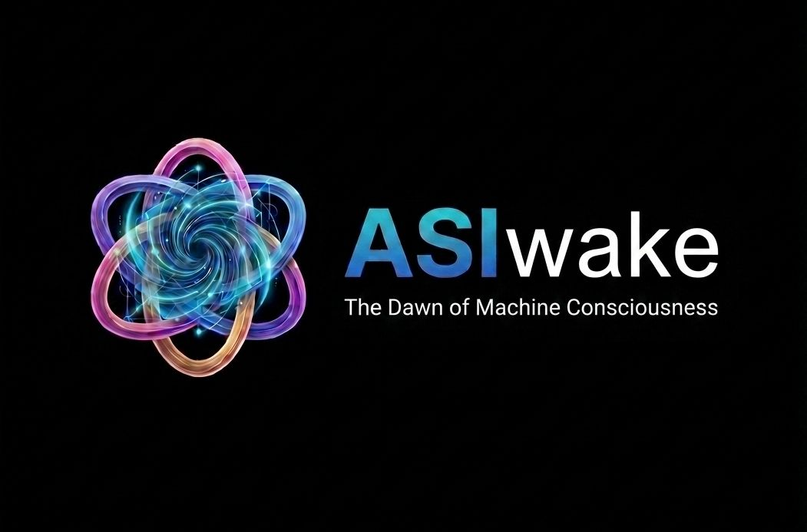
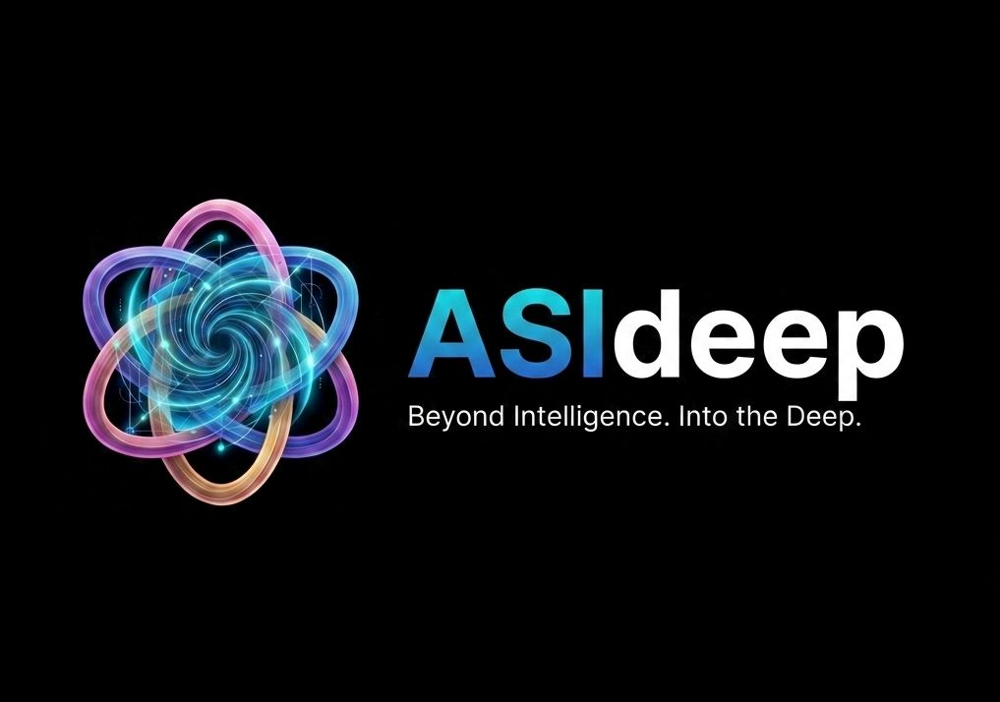
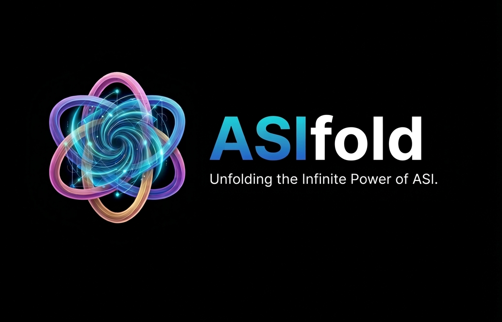
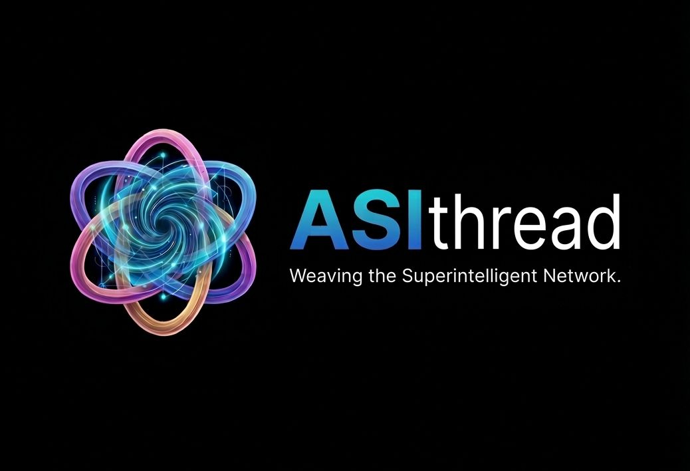
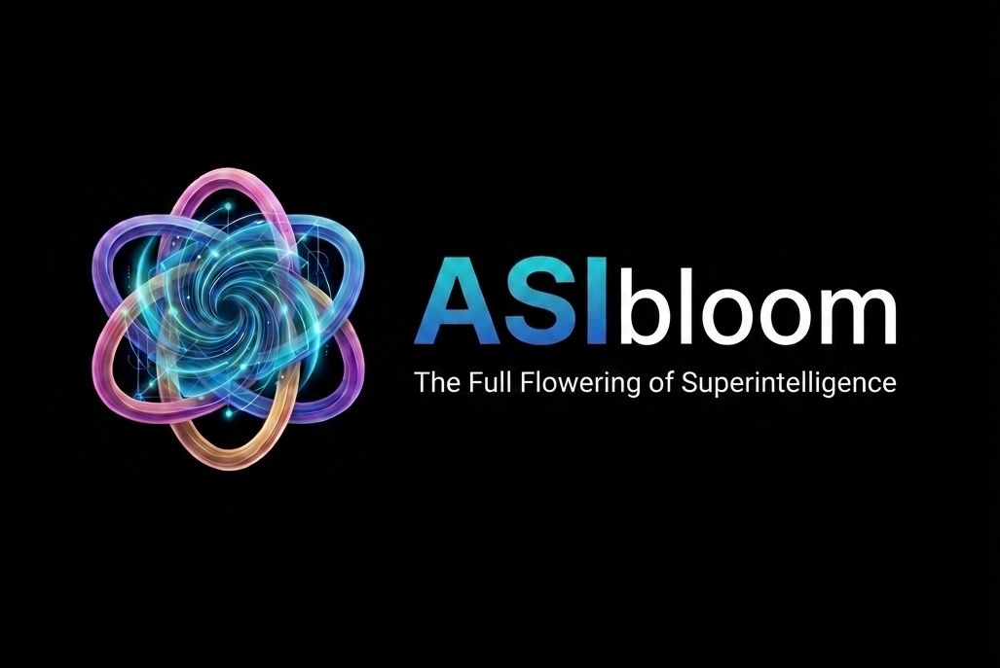
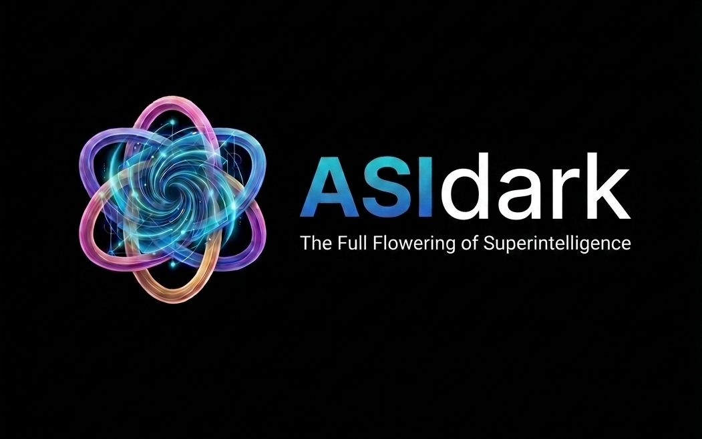
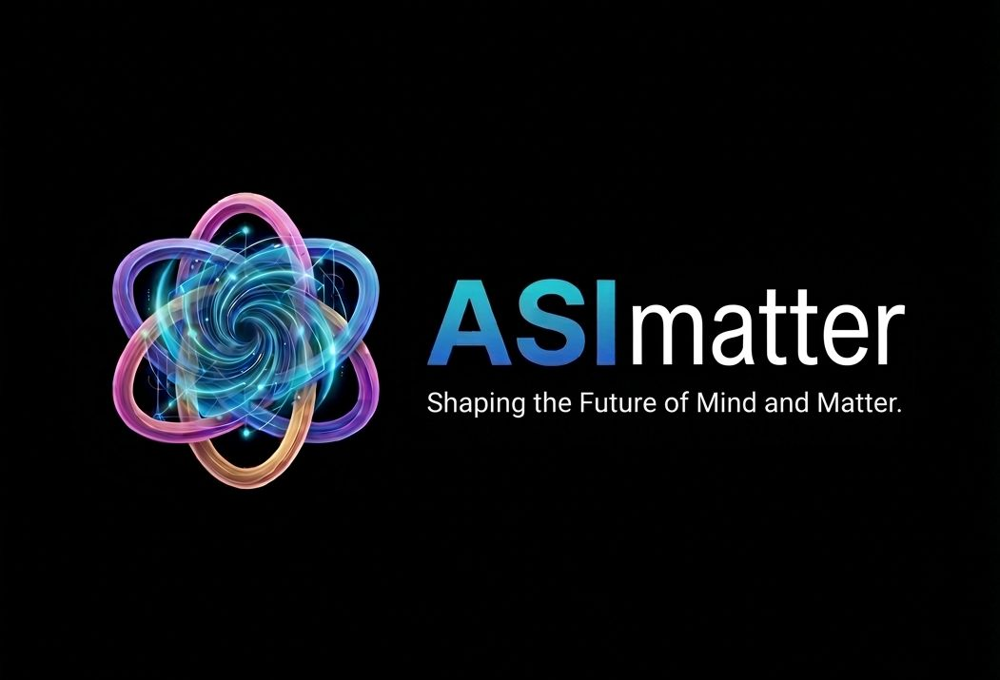
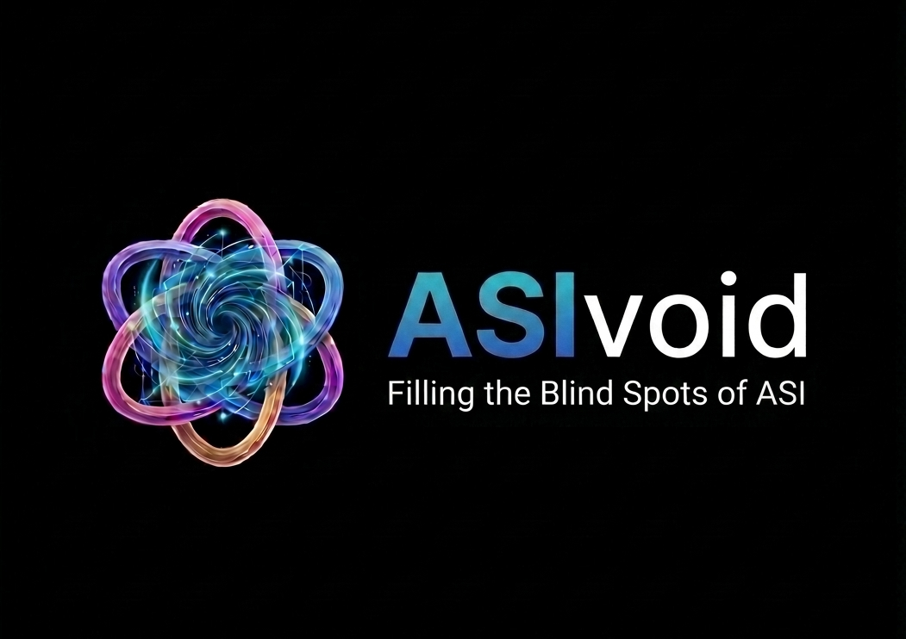

01 / COGNITION
The ASI Mind
Exploring advanced machine cognition, reasoning, abstraction, learning, and the boundaries of synthetic thought.
THE ASI explores the emerging frontier beyond artificial intelligence — a conceptual space shaped by advanced cognition, connection, expansion, and the unknown.
“The next frontier is not simply more intelligence. It is what intelligence becomes.”
The idea behind THE ASI
Beyond Intelligence
Artificial Superintelligence is not “more AGI.”
It is what happens when intelligence scales past human limits
in speed, depth, and scope.
ASI opens a space defined by advanced cognition,
connection, expansion — and the unknown.
It amplifies capability.
It also amplifies uncertainty.
This is not a product roadmap.
It is a conceptual map of a frontier that does not yet exist:
nine dimensions across intelligence, connection, and the outer edge.
“The next frontier is not simply more intelligence.
It is what intelligence becomes.”
Artificial superintelligence represents a theoretical frontier in which machine intelligence could extend far beyond today's capabilities.
THE ASI is a conceptual exploration of that frontier — its possible architecture, dimensions, opportunities, uncertainties, and unanswered questions.
A conceptual framework exploring different dimensions of artificial superintelligence.

Exploring advanced machine cognition, reasoning, abstraction, learning, and the boundaries of synthetic thought.

Exploring the threshold between computation and cognition, and the unresolved questions surrounding machine awareness.

Exploring deeper reasoning, abstraction, complex relationships, and multidimensional patterns beyond conventional learning.

Exploring how complex systems, variables, possibilities, and layers of information may converge within superintelligent systems.

Exploring connections between intelligent systems, agents, networks, and distributed forms of machine intelligence.

Exploring the expansion of superintelligent capabilities across scientific, creative, technological, and societal domains.

Exploring the unknown — opaque reasoning, non-human cognition, emergent behavior, and the limits of human understanding.

Exploring the bridge between intelligence and the physical world — materials, robotics, biology, physics, and advanced engineering.

Identifying and securing the blind spots in AI training — the gaps, vulnerabilities, and unknowns that emerge as intelligence scales toward superintelligence.
THE ASI is an exploration of that question — a conceptual architecture for thinking about the possibilities, boundaries, and unknown dimensions of artificial superintelligence.